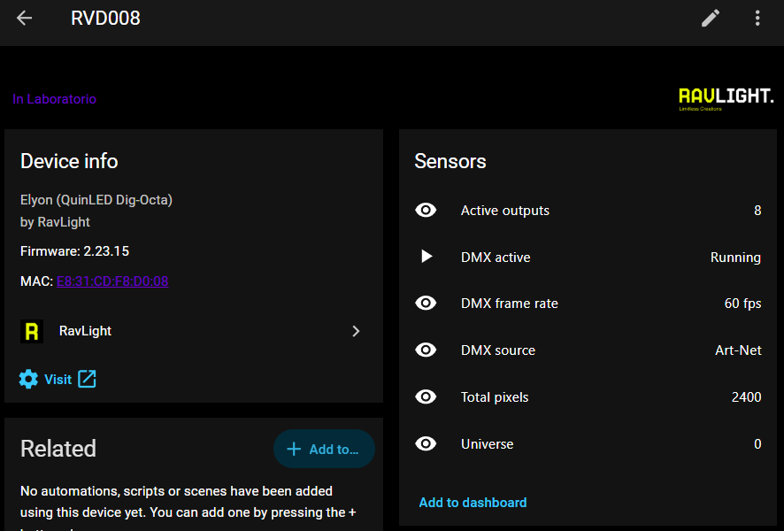
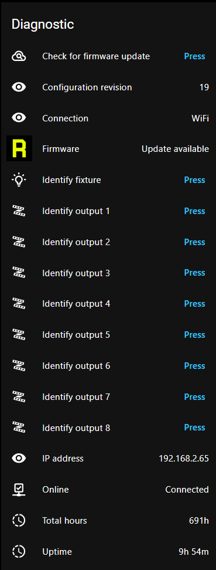

Home Assistant integration
A free, open-source integration that brings every RavLight controller into Home Assistant — discovered on its own, with no addresses typed in. It watches the rig; it does not drive it.

Who this is for
Two audiences, the same integration.
Seasonal displays. A Halloween or Christmas display that has outgrown one controller is a small distributed system on the outside of a house: boards under the eaves, in the garden, in a box on the roof, tens of thousands of pixels between them. The sequencer runs the show. What it cannot tell you is that the controller on the garage roof has been sitting at 71 °C since three o'clock, or that one board dropped off the WiFi and a whole roof line went dark twenty minutes ago.
Installations that stay up. A rig in a venue, a shop, a museum — the same questions, asked all year instead of for six weeks.
For the workshop side of the job — inventory, addressing, patching a whole rig at once, firmware for the fleet — use Polaris. The division is simple: Polaris is what you use while building the rig, Home Assistant is what stays on once it is up.
Installing
Through HACS, as a custom repository. A submission to the HACS default store is in progress; until it lands, adding the repository by hand takes about a minute.
- HACS → the three-dot menu → Custom repositories
- Paste
https://github.com/Q-Squared-Systems/ha-ravlight, type Integration, Add - Search for RavLight, Download
- Restart Home Assistant
Devices running current firmware then announce themselves: a Discovered — RavLight card appears in Settings → Devices & services, and accepting it is the whole setup. If nothing appears, add it manually and either scan the network or enter one controller's address.
How devices are found
Four routes, so that a controller is found whatever the network looks like:
| Route | Needs | Finds |
|---|---|---|
| mDNS | current firmware | Controllers already running, automatically — and follows them when their address changes |
| DHCP hostname | any firmware | Controllers as they take or renew a lease |
| Network scan | Home Assistant on host networking | Anything that answers a broadcast probe, on demand from the setup dialog |
| Through a controller | one reachable device | Fixtures on subnets Home Assistant sees no broadcast from |
Devices are identified by their hardware MAC, not by the name you gave them, so renaming a controller in its web UI does not create a second device or orphan its history.
What you get
Entities are built from what each device reports about itself, so a controller only ever gets the ones it actually has — no unavailable rows for hardware that is not there.
Every fixture
| Entity | What it is good for |
|---|---|
| DMX active · DMX frame rate | Whether show data is arriving, and how fast. The pair an automation watches to know a show really started |
| DMX source · Universe | sACN, Art-Net, wired DMX, a recorded scene or the on-board effects — and which universe the device starts at |
| Temperature | Where the board has a sensor. The one that matters in a sealed enclosure in the sun |
| WiFi signal · Connection · IP address | Wired or wireless, how good the link is, where the device is |
| Uptime · Total hours | A controller that reboots on its own shows up as an uptime that keeps resetting |
| Online | Reachability, kept reporting even while the device is unreachable |
| Firmware | An update entity fed by the device's own update check |
| Identify · Restart · Check for update | Buttons. Identify runs the fixture's visual identification sequence |
LED controllers — Elyon, Axon
Active outputs and total pixel count, with a per-output breakdown in the attributes: protocol, pixel count, universe and start channel for each one. Every configured output also gets its own identify button, which wipes that run white — the fastest way to work out which physical string a row in your patch actually drives, from the ground, on a phone.

Orion winches
Motor state, position in centimetres with its travel limits, driver temperature, fault flags, StallGuard reading, homed, moving and manual override — plus run homing, emergency stop, clear fault and release DMX override.
Automations worth having
Two that earn their place on the first evening of a season.
The show did not start
The sequencer is a PC that can fail to wake, a service that can fail to launch, a network link that can come up half-configured. The controllers know within a second whether frames are arriving:
alias: Display — no data after showtime
triggers:
- trigger: numeric_state
entity_id: sensor.rvd008_dmx_frame_rate
below: 1
for: "00:05:00"
conditions:
- condition: time
after: "17:30:00"
before: "23:00:00"
actions:
- action: notify.mobile_app_phone
data:
title: Display fault
message: >-
No show data reaching RVD008 for five minutes.
Check the sequencer.A controller is cooking
Southern-hemisphere Christmas is a summer problem: a sealed enclosure in direct sun runs far hotter than the same board on a bench in December in Europe.
alias: Display — controller too hot
triggers:
- trigger: numeric_state
entity_id: sensor.rvd008_temperature
above: 70
for: "00:10:00"
actions:
- action: notify.mobile_app_phone
data:
title: Controller overheating
message: "RVD008 has been above 70 °C for ten minutes."Both are per-controller as written. For a display with a dozen boards, point the same automation at a group, or template over the devices — the entity names follow the device name you set in the fixture's own web UI.
What it does not do
- No pixel control. Home Assistant is not in the show path, by design. Nothing here transmits sACN or Art-Net, and a dropped Home Assistant does not touch a running display.
- No configuration writing. Addressing, patching and per-output setup stay in the device's web UI and in Polaris. The integration reads configuration to describe the device; it does not change it.
- Polling, not push. State refreshes every 15 seconds. Frame rate and DMX activity are near-live at that cadence; they are not a substitute for a console's own monitoring.
- Local only. One config entry per controller, on your own network. No cloud, no account, no bridge.
- Destructive actions are deliberately absent — no factory reset, no firmware upload, no winch jog. Those need an operator watching the hardware.
Credits
Open source under the MIT licence, originally written by George Qualley IV. Issues and pull requests are welcome on GitHub.